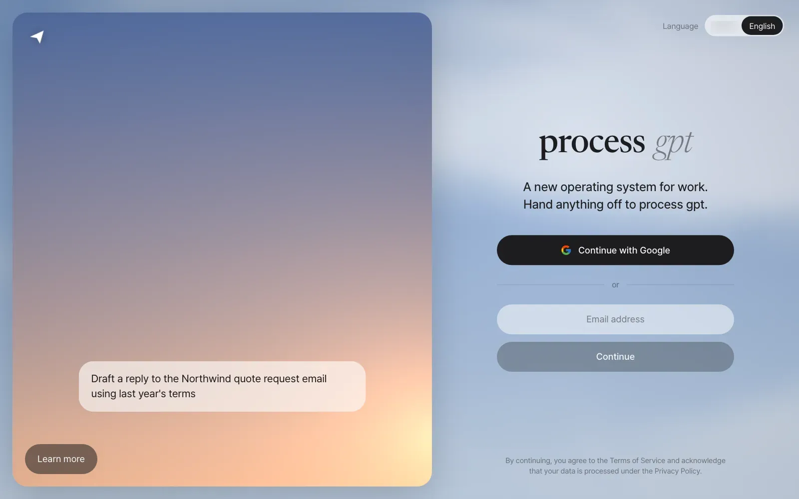
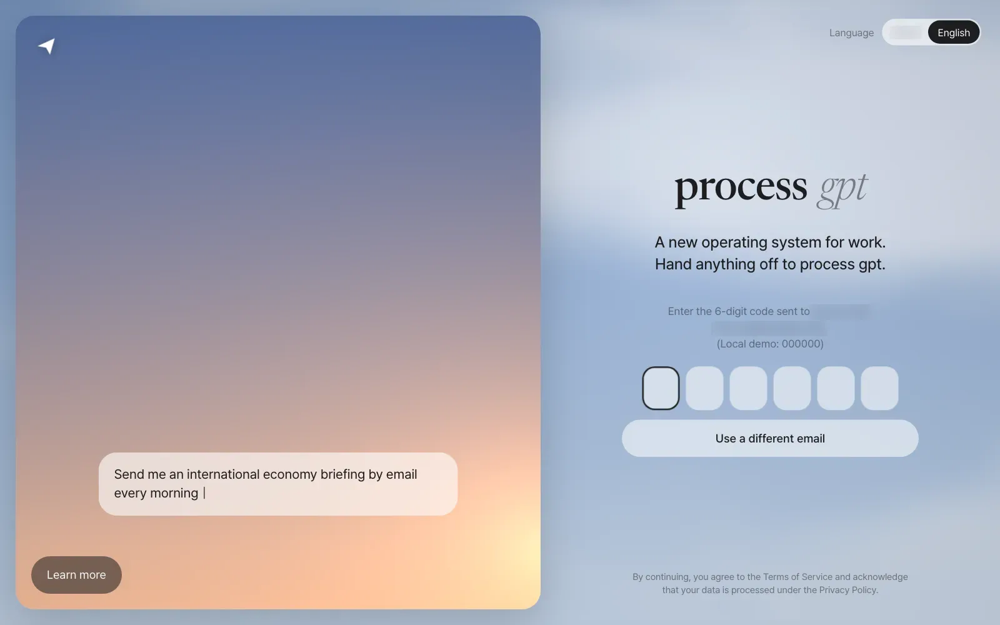
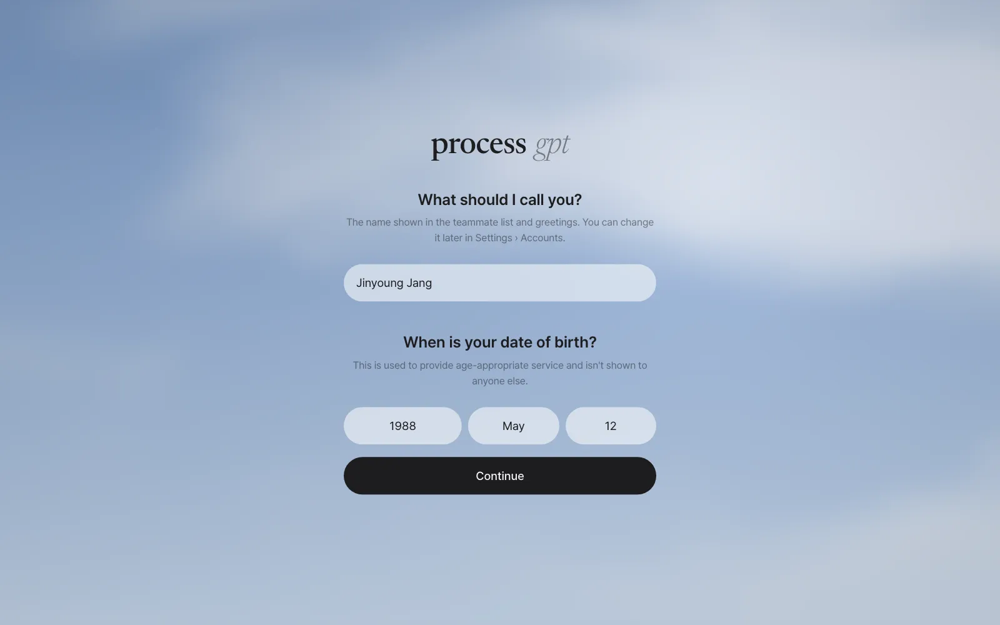
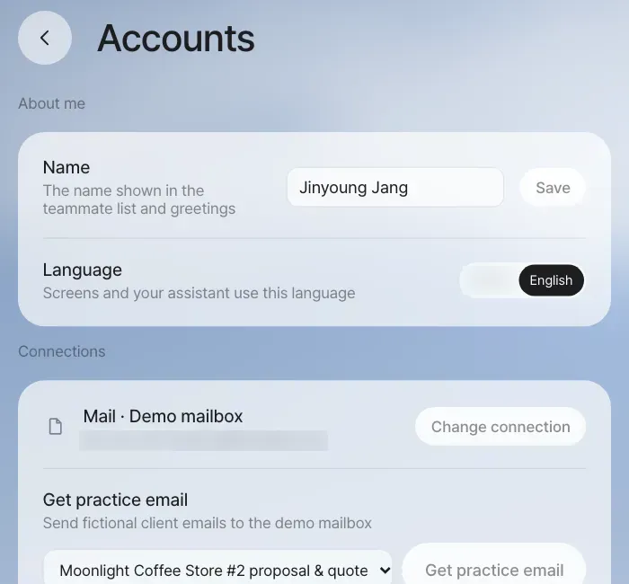
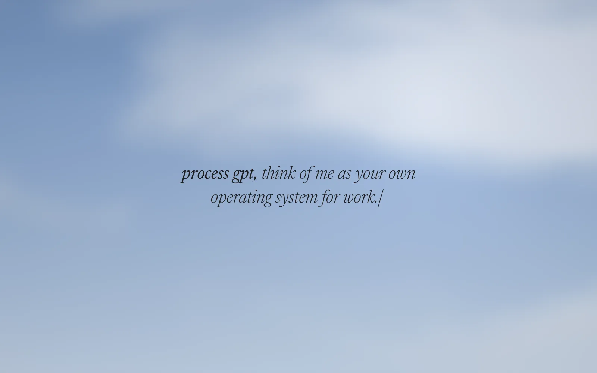
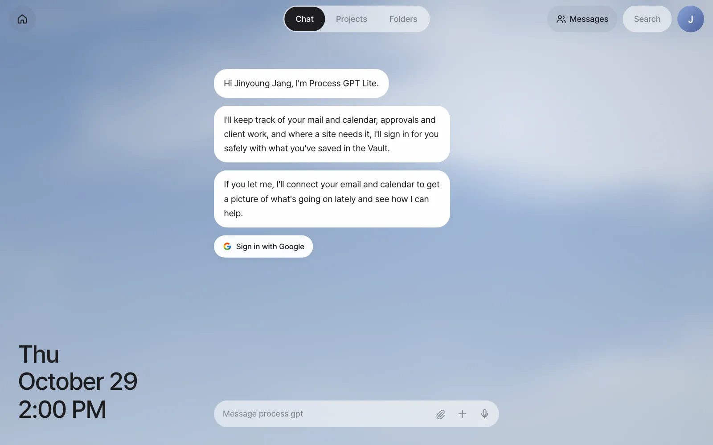
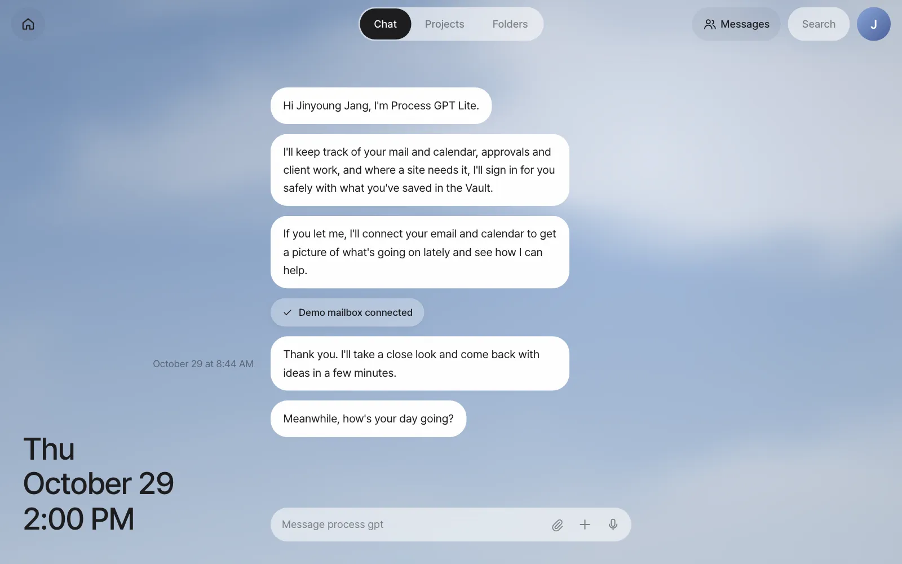

Install Process GPT Lite on one PC with Docker using a single command, add your LLM key, and log in for the first time with a code sent by email. Once you finish the first-run guide that follows login (date of birth → greeting → mail connection), you're ready for the hands-on work from Chapter 2.
What gets installed#
Process GPT Lite is made of the screen (web app) and the Process GPT backend that works behind it. The install script downloads and builds all of this as Docker containers, prepares the database, and even creates the first administrator account.
| Part | What it does |
|---|---|
| Web app and server | The screens you'll see from now on. Chat, Home, Settings, Vault, browser agent |
| Login and storage | Email login, storing conversations and files (a minimal setup of open-source Supabase) |
| Agents | The AI agents that take a conversation and actually do the work (deepagents), and an isolated workspace where agents handle files (sandbox) |
| Documents | A document server that creates Hangul (HWPX), Word and Excel documents, and an editor that edits them on screen (IeumOffice) |
| Mailbox | An install-only mailbox that receives login codes (mailpit) |
Everything runs inside your PC. The only things that go outside are LLM calls (to the API address you set) and, once connected, mail and external services.
What you need#
| Item | Minimum | Recommended |
|---|---|---|
| Docker | Docker Desktop 4.x or Docker Engine 24 or later (Compose v2) | |
| Memory given to Docker | 6GB (about 1.5GB in use while running) | 8GB or more (for the first build) |
| CPU | 4 cores | 8 cores |
| Disk | 20GB (about 11GB of images plus build cache) | 30GB |
| LLM | The address, key and model name of an OpenAI-compatible API |
You can install on macOS, Linux and Windows (WSL2). On Windows, we recommend installing Docker Engine inside WSL2.
Install#
Run one line in a terminal. It downloads the repository to ~/process-gpt-lite and runs the install script.
curl -fsSL https://raw.githubusercontent.com/uengine-oss/process-gpt-lite/main/install/get.sh | bash
Cloning the repository yourself works the same way.
git clone https://github.com/uengine-oss/process-gpt-lite.git
cd process-gpt-lite/install
./install.sh
The script asks a few questions. The value in brackets is the default. Just press Enter to use it.
| Question | Example | Notes |
|---|---|---|
| LLM address (OpenAI-compatible) | https://api.openai.com/v1 |
An in-house model server or another OpenAI-compatible address also works |
| LLM API key | (What you type isn't shown on screen) | If you leave it blank, chat won't answer |
| Default model | gpt-6-luna |
The model agents use when they work |
| Fast model (routing, classification) | Same as the default model | The model for short decisions, like classifying messages and analyzing mail |
| First administrator email | admin@pgpt-lite.local |
When installation finishes, this address becomes the administrator account |
The first time, building the images takes 20–40 minutes (the IeumOffice editor takes the longest). When it's done, you see a summary like this.
Process GPT Lite is ready
Address http://localhost:18080
Admin admin@pgpt-lite.local
Login code Enter your email and the code goes to the mailbox → http://localhost:18025
Install without questions
To install the same way on several machines, pass the values as environment variables and add --yes.
bash
LLM_API_KEY=… LLM_BASE_URL=… LLM_MODEL=… ADMIN_EMAIL=… ./install.sh --yes
Profiles — how much to run#
| Profile | What's included | When to use it |
|---|---|---|
lite (default) |
Chat, agents, document creation and editing, shared folders, panel apps, Vault, browser agent | When you follow Parts 1–4 (on your own, documents, less repetition, team) |
full (experimental) |
lite + the process engine + a hub for connecting external tools (MCP hub) | Part 5 (processes) — when you start and run processes: ./install.sh --profile full |
mining (optional) |
Process mining on top of the above | When you want process suggestions from repeated work: ./install.sh --with-mining |
craft (optional) |
The web editors and command-line tools of the five ArtCraft apps (CAD, vector, photo, sound and video) | When you follow Chapter 8: ./install.sh --with-craft. It pulls a prebuilt image (about 660MB). To build from source instead, put LITE_CRAFT_IMAGE= (empty) in .env (about 50 minutes the first time, 12GB or more of Docker memory) |
What the install bundle leaves out
The current install bundle doesn't include the context router that splits conversations by topic, or the routing model (they need a GPU or a lot of memory). To use them, run them separately and connect them by putting their addresses (CONTEXT_ROUTER_URL, JUDGE_URL) in .env. Chat works without them, but the "conversations split on their own" feature in Chapter 4 is turned off. The editors for drawings, pictures, sound and video (ArtCraft, Chapter 8) are installed along with the rest by adding --with-craft, and the Claude Code Workroom (Chapter 23) is installed separately.
The settings file .env#
.env in the install folder (install/) holds all the settings. It's created on the first run, with 0600 permissions so only you can read it. Secret values such as the database password, the login token signing key and the Vault master key are generated at random and filled in by the script. They're never printed on screen or in logs, and they're kept as they are when you upgrade.
These are the values you'll change most often.
| Key | Default | Meaning |
|---|---|---|
LLM_BASE_URL, LLM_API_KEY |
OpenAI address, empty | The LLM every AI feature uses |
LLM_MODEL, LLM_FAST_MODEL |
gpt-6-luna, gpt-4.1-mini |
The working model and the model for fast decisions |
LLM_USE_RESPONSES_API |
true |
The agent calls OpenAI's Responses API (needed for reasoning models to use tools). A first install with a non-OpenAI address sets it to false |
LLM_EMBEDDING_MODEL |
text-embedding-3-small |
Embeddings for document search |
TRANSCRIBE_API_KEY |
empty | Online meeting transcription (an OpenAI speech API key). If empty, you get video meetings only, with no captions or meeting minutes text (Chapter 16) |
GOOGLE_CLIENT_ID, GOOGLE_CLIENT_SECRET |
empty | Google login and Gmail connection (Chapter 5) |
SMTP_HOST and other SMTP_* |
empty | For sending login codes as real email. If empty, they go to the bundled mailbox |
DEMO_LOGIN |
0 |
If 1, the fixed code 000000 is also accepted (see the warning below) |
PUBLIC_URL, LITE_BIND |
http://localhost:18080, 127.0.0.1 |
Change these to connect from other PCs |
After editing .env, run ./install.sh again and the containers restart with the new values. Your data stays as it is.
Ports and addresses#
| Port | What |
|---|---|
18080 |
The whole app — the web screens, server API, document editor and login all come in through this one address |
18025 |
The bundled mailbox — read login code emails here |
By default, the app opens only on this PC (127.0.0.1). If another program is using 18080, change it like ./install.sh --port 28080. To let teammates connect from other PCs, change .env to PUBLIC_URL=http://<this PC's IP>:18080 and LITE_BIND=0.0.0.0, set up SMTP, and run ./install.sh again. You need SMTP because the bundled mailbox opens only on this PC. When you open the app to the internet, put an HTTPS reverse proxy in front of it.
First login#
Open http://localhost:18080 in a browser. Over the sky picture on the left, an example sentence such as "Draft a reply to the Northwind quote request email using last year's terms" types itself out one letter at a time. It's an example of what you can ask this app to do.

- Enter your email address and click Continue. Try logging in first with the administrator email you entered during installation.
- Open the bundled mailbox
http://localhost:18025. An email with a 6-digit code is waiting. If you set up SMTP, it goes to your real mailbox. - Enter the code in the six boxes and you're logged in right away. Pasting works too.

If you put GOOGLE_CLIENT_ID and GOOGLE_CLIENT_SECRET in .env, you can also log in with Continue with Google. If you didn't, this button tells you "Please continue with email."
Demo login only on a closed PC
With DEMO_LOGIN=1, any email logs in with the code 000000. Turn it on only for demos or on a PC you use alone. On a server other people can reach, always keep it at DEMO_LOGIN=0 (the default). To turn it off, change the value in .env to 0 and run ./install.sh again. A development server you run straight from source is the opposite: demo login is on by default, so turn it off by putting PRO_DEMO_LOGIN=0 in server/.env. The screenshots in this tutorial were taken with a practice account on a development server with demo login on.
Just once — the first-run guide#
The first time you log in, three screens appear in turn. They appear only once. After that, the chat screen opens directly.
① Name and date of birth. If you logged in with an email code, it first asks for your name: "What should I call you?" This name appears in the teammate list and in greetings, so enter your real name (in this tutorial, Jinyoung Jang). If you logged in with Google and your name is already known, this field doesn't appear. Your date of birth is asked so the service fits your age, and it isn't shown to anyone else. Choose the year, month and day, then click Continue.

You can change your name later
Edit the name field in About me at the top of Settings › Accounts and click Save. The teammate list shows the new name too.

② Greeting. The sentence "process gpt, think of me as your own operating system for work." types itself out, and then the chat screen opens on its own.

③ The assistant introduces itself and offers to connect mail. In the chat, the assistant introduces itself in three sentences and suggests connecting your mail. On a server with Google login set up, the button reads Sign in with Google. Otherwise it reads Connect mail.

Click the button and a window opens where you choose how to connect. In this tutorial, choose Demo mailbox. It's a practice mailbox with five fictional client emails, so you can follow the next chapters as written without connecting real mail. You'll get more mail for the exercises later with Get practice email (Chapter 5). Gmail and IMAP connections are covered in detail in Chapter 5.

About a minute after you connect, the assistant reads your mail, leaves a Morning brief in the chat (an Afternoon or Evening brief later in the day), and puts four to-do cards on Home.
Stop, upgrade, remove#
| What you want | Command (in the install/ folder) |
|---|---|
| Restart (safe to run any number of times) | ./install.sh |
| Upgrade to a new version | ./install.sh --upgrade |
| Stop (keep the data) | ./install.sh --uninstall |
Remove everything (data, images and even .env) |
./install.sh --uninstall --purge |
| Status and logs | docker compose ps, docker compose logs -f server deepagents |
If something goes wrong#
| Symptom | What to check |
|---|---|
| "Port 18080 is being used by another program" | ./install.sh --port 28080 |
| The login code doesn't arrive | The http://localhost:18025 mailbox, docker compose logs auth |
| Chat doesn't answer | The LLM_* values in .env, docker compose logs deepagents |
| The agent gets stuck on file work | Docker socket permissions (on Linux, your user must be in the docker group) |
| A document shows a blank screen in the editor | docker compose logs office-host |
| The build fails for lack of memory | Raise Docker's memory to 8GB or more (12GB or more if you build ArtCraft from source), and pause other containers for a while |
Next#
Installation and first login are done. In the next chapter, you take a tour of the screen you just opened — Home cards, Chat, the top bar and Settings (Chapter 2).
Check questions
- Log in at the address in the install summary and finish the first-run guide until to-do cards appear on Home.
- If two teammates (playing Minji Kim and Seoyeon Park) need to connect from other PCs, what do you change in
.env, and what else do you need to set up? - Write down how to turn demo login on for a demo laptop and turn it off after the event.
Answer
- You're done when the chat shows "Demo mailbox connected" and "Morning brief" (or Afternoon or Evening brief), and when you click the Home button there are cards that start with verbs like Reply, Review or Pay.
- Change to
PUBLIC_URL=http://<this PC's IP>:18080andLITE_BIND=0.0.0.0, then run./install.shagain. The bundled mailbox (18025) opens only on this PC, so you must set upSMTP_*so teammates can receive their login codes. When you open it to the internet, also put an HTTPS reverse proxy in front. - Change
.envtoDEMO_LOGIN=1and run./install.sh→ after the event, set it back toDEMO_LOGIN=0and run./install.shagain. Remember that while it's on, anyone can log in with any email.